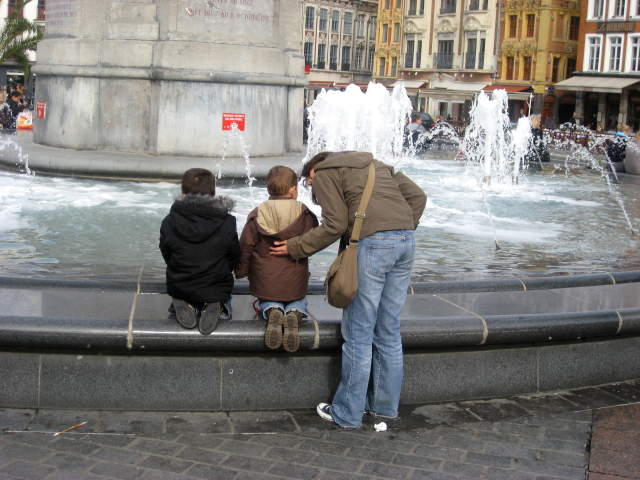
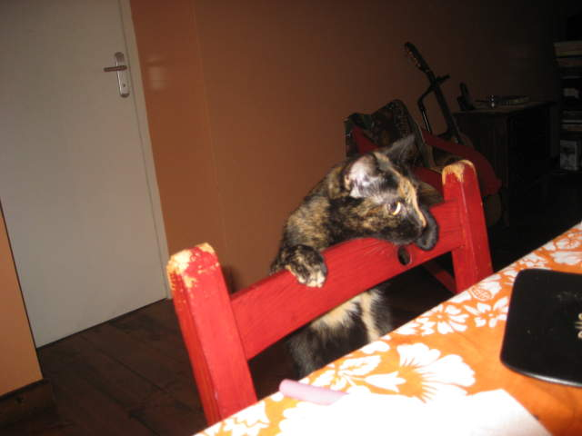

The French train system is fast, but the real benefit is the view. Don't you hate it when you're on a train, and you're going to take a picture of a really nice view, then you pass by some trees and your view is gone? Well that happened to me about thirty times on this train. The passengers sitting near me must have wondered if I was just pretending to be a photographer or something. Well, this is the best picture I could get, but if you're ever on the train heading through southern France, I suggest you look out for a gorgeous castle on a mountain and take pictures of that. I will admit that the aesthetics of this country really put New Jersey to shame.
I met Francois on the ride up north. He at first made a French joke to me, and regretted it soon after, when he heard me say "Parlay voo anglay?" He did know enough English for us to have a good conversation. He actually knew about couchsurfing and I told him I'd be up for showing him around if he ever visits the northeast. We had someone take our picture, although with the bright window behind us, our faces came out dark. A seemingly grumpy man nearby shouted "Use the flash! Contra-jour!" at me. Contra-jour is a term that translates to "against day". The camera will adjust to the sun's brightness, but if you use the flash, then foreground subjects are adequately brightened as well.
To the right is Contra-jour Man who turned out to have a very affable personality. He'd make a good James Bond villain. To the left is Patty. The French seemed to have a weird tradition. Either they brought no food and just bought food on the train, or they brought a heap of junk food with them. Note that none of this junk food is from McDonald's. I just find a heap of junk food nauseating. Here's Patty and Contra-jour Man posing with some jelly beans.

I arrived in Lille. Actually, my host was in Lomme, near Lille. I went from the very southern edge of France all the way to the very north. When I got up there, I didn't see my host that was supposed to meet up with me. I called and left a message. It did make me a bit worried, but I found an internet cafe and tried to get in touch with her then. Using a French keyboard is really annoying by the way. Worst case scenario, I would have found my way over to a hostel or even hotel if I needed to, but I was confident someone would come get me.
A few minutes later, Marc showed up at the subway station. My host, Moira (pronounced Moy-ha, of Gaelic origin), was hosted by him in Recife, Brazil, and was hosting him in return. They got along... very well. Moira has two children, Yvan and Elouan. They both have a silly amount of energy.
We made our way to a restaurant in Lille the next day. Moira's on the left, Marc's on the right. Her kids are chained to the wall off-camera.
Above one of the train stations is this glass pyramid fountain. You can look up through it from inside the station.
Buildings in Lille don't really compare with buildings in Paris. However, that's what tourists do. They take pictures of buildings.
Here's a whole lot of buildings in the center of Lille. I think the lady atop that pillar is actually holding a riding crop and not a sword.

Here's a view of Moira as she pushes one of her children into the fountain.
Old newspapers were for sale in the old courthouse, dating back to the 19th century.
There were all sorts of things for sale here. Mainly books, but also old trinkets as well.
This building advertises "Opera de Lille". We didn't see any opera though.
This is the closest you'll get to Big Ben in Lille.
Why should men who like porn stare down in shame? Well, with mannequins lying underground like this, we'd be happy to. If only all mannequins looked this hot.
This is a colorful real estate building.
One thing I liked a lot about Lille was the Dutch influence. See the step-like design atop the buildings? Very Dutch.
Nothing wrong with painting your building orange in Lille.
The kids were with us the whole time. They definitely were a handful. We found a fenced off area with a small locked door. It was a good time to let the kids play while we took a breather. Here Elouan is testing the door. This reminded me of Alice in Wonderland.
Here's a front shot of Yvan and Elouan, partners in crime.
Lille was fairly scenic.
More rest for us while the hooligans raid the playground. While walking around, Elouan started to ascend up the ledge of a fenced off ramp. He clung to the fence, getting higher and higher, until I was just about the only one who could reach him safely. I recognized this and pulled the bugger off the fence, very carefully, and eventually he was safe n' sound. One day, when Elouan's insanely wealthy, I'm going to repeat this story to him and collect my reward.
This is a rather embarrassing picture. First, I'll talk more about the two additional companions here. To the far right is Elodie, who was another couchsurfer host who was up for showing me around. To the left next to me is her friend. I can't remember his name though. He was fun to hang out with as well. Now for the embarrassing part. So Marc told me to make a gang sign with my hand. I totally screwed it up. I did the peace sign. You can see Marc looking over at me, in obvious amusement.
So now it was just me, Elodie, and her friend. We looked at a map and decided to seek out the citadel in the northwest corner of Lille. All of us were pretty bad with directions.
We did make it though! All it takes is some perseverance and application of common sense. Maps really do work. We knew were were near the citadel when we saw foliage. According to the map, there would be foliage there.
I hope this tree's family never sees what happened here. The carving did look cool though. "Une maison pour tous" means "a house for all". There's a zoo nearby too, but we didn't go there.
We arrived at the citadel. I had incredible trouble pronouncing citadel at the time, providing no end to entertainment for my friends. Elodie was trying to teach me a bit of French at the time too. She said my rolled R's sounded like a barking dog. Maybe a French one though.
The water was coated with these green specks. I think they're seeds of some sort, but it looked surreal so I took a picture.
This one too. It might not look that good from a distance. Who'd want to swim in a guacamole river?
We turned to head back, but we realized we didn't know exactly where we were. The citadel didn't have roads near it, although eventually we'd find a major road by walking away from it. That's what we did. We crossed a bridge and headed down a main road, hoping to find a way to cross back towards central Lille. It was difficult to find where to cross back over from, and due to the time of day, we decided to head further away and take a bus back. We strayed into the town of St. Andreas. I took a picture of it because I realized very few Americans would ever stray here.
We parted ways and I headed back to Moira's place. I realized not too many Americans visit Lomme either, so I took a picture of the Lomme sign. The other side says "Lille".
I sat down for a last meal with my last host, and helped myself to the Camembert cheese. I cut sideways, like on the bottom, but the proper way to cut the cheese is like a wedge as shown on top. Moira was shaking her head, saying that I never learned how to cut Camembert cheese, giggling to herself. I decided to take a picture, but not before Elouan scarred the cheese across the middle.

By the way, Moira had a cat too. You might imagine this cat has a rough life with the kids running around, but he really knew how to handle them. He just kept his distance, and the kids did the same. He must have taken some swipes at them in the past, because they seemed to have learned their lesson. By the way, the cat was hungry and dinner was going to be served.
Spaghetti and ground beef was the cat's favorite, apparently. This cat repeated his mischief very reliably, so I was able to get him on camera, before he got shooed away again.
Back